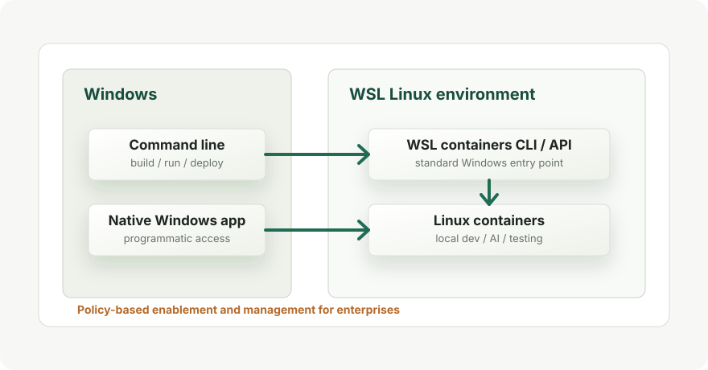

Windows / WSL
WSL containersでWindows上のLinuxコンテナ実行はどう変わるか
WSL containersは、Windows上でLinuxコンテナを作成・実行・操作するためのWSL新機能です。 Microsoft Build 2026で発表され、数カ月以内にパブリックプレビューとして提供予定とされています。
結論
WSL containersは、Windowsの標準機能であるWSL側にLinuxコンテナ実行の入口を持たせる動きです。
発表時点では、Linuxコンテナを扱うための WSL containers CLI と、Windowsネイティブアプリから利用できる
WSL containers API が示されています。
重要なのは、これは「今すぐDocker Desktopを完全に置き換える完成版」というより、 Windows標準の開発基盤としてLinuxコンテナを扱いやすくするためのプレビュー予定機能だという点です。 具体的なコマンド体系、対応イメージ、既存Docker/Podman/containerdとの関係は、プレビュー公開後に確認する必要があります。
何が発表されたのか

MicrosoftはBuild 2026で、Windows開発者向けの新機能群の一つとしてWSL containersを発表しました。 公式ブログでは、WSLがWindows上でLinuxワークロードを動かす基盤になっていることを前提に、 そこへLinuxコンテナを作成・実行・操作する仕組みを統合すると説明しています。
Publickeyの記事では、日本時間2026年6月3日未明に開幕したMicrosoft Build 2026での発表として取り上げられています。 現時点のキーワードは、標準機能、CLI/API、パブリックプレビュー、そして企業管理です。
提供される要素
| 要素 | 説明 | 使いどころ |
|---|---|---|
| WSL containers CLI | Windows上のコマンドラインからLinuxコンテナをビルド、実行、デプロイするための入口。 | ローカル開発、テスト、AI/MLワークロードの検証。 |
| WSL containers API | WindowsネイティブアプリからLinuxコンテナ実行機能へアクセスするためのAPI。 | WindowsアプリにLinuxベースの処理、テストパイプライン、ローカルAI処理を組み込む。 |
| 企業向け管理 | ポリシーベースの有効化、イメージ取得元の制御、ホストとの相互作用の管理が示されている。 | 開発者PC上で何が動いているかをIT部門が把握・統制する。 |
| 提供時期 | 数カ月以内にWSLの通常アップデートとしてパブリックプレビュー予定。 | 本番採用ではなく、まず検証計画と要件整理を進める段階。 |
Docker Desktopとは何が違うのか
現在のWindows上のLinuxコンテナ開発では、Docker DesktopのWSL 2バックエンドを使う構成が一般的です。 Docker DesktopはDocker Engine、GUI、拡張機能、Kubernetes連携などをまとめた製品として提供されています。
WSL containersは、少なくとも発表内容を見る限り、Windows/WSL側にLinuxコンテナの標準的な実行入口を作るものです。 したがって比較軸は「Docker DesktopのUIやエコシステムを置き換えるか」ではなく、 「Windows標準のWSL更新だけでLinuxコンテナ実行をどこまで扱えるようになるか」です。
- 個人開発では、セットアップやライセンス面の選択肢が増える可能性があります。
- 企業環境では、IT管理者がイメージ取得元や実行状況を把握しやすくなる可能性があります。
- Docker Desktop固有の機能や既存ワークフローがそのまま移るとは限りません。
開発者への影響
期待できる影響は、Windows上でLinuxコンテナを扱う初期設定の負担が下がることです。 特に、WindowsをメインOSにしながらLinuxベースのCLI、テスト、AI/ML処理、ビルド環境を扱う開発者にとって意味があります。
また、APIが提供される点は重要です。 Windowsアプリや開発支援ツールが、内部処理としてLinuxコンテナを起動できるようになれば、 「WindowsアプリのUI」と「Linux環境で動く処理」を自然に組み合わせやすくなります。
現時点の注意点
- 2026年6月4日時点では、発表段階であり、パブリックプレビューはまだ数カ月以内の予定です。
- 具体的なCLI構文、対応Windowsバージョン、必要なWSLバージョンは、プレビュー公開後に確認が必要です。
- Docker Desktop、Podman、containerd、Dev Containersとの実務上の住み分けは、実装詳細が出てから判断します。
- 企業環境では、ポリシー、監査、イメージ取得元制御が利点になり得ますが、管理機能の具体仕様は未確認です。
- 「LinuxコンテナがWindowsカーネル上で直接動く」という意味ではなく、WSLのLinux実行基盤を使う機能として理解するのが安全です。
今後確認すること
- プレビュー版で提供されるコマンド名とサブコマンド。
- Dockerfile、OCIイメージ、Compose相当の機能への対応範囲。
- 既存のDocker Desktop環境と同居できるか。
- VS Code Dev ContainersやCI向けローカルテストとの相性。
- 企業ポリシーによるイメージソース制御や監査ログの具体的な挙動。